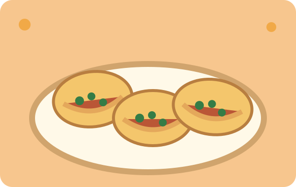

Breakfast, the Sofy’s way
Fresh tortillas and a warm start to your morning.
Your neighborhood taco stop
Breakfast tacos wrapped in fresh tortillas. A warm lunch. A seat under the canopy. Sofy’s is the little taco stop tucked away on Oakhurst Drive that locals keep coming back to.
Something for every appetite
Start with breakfast, stay for lunch. Call for today's specials and current prices.
Straight from the taco stop
A taste of the food and the little place behind it.
Fresh tortillas and a warm start to your morning.

A lunch worth stopping for.
Find a spot beneath the yellow canopy.
Original illustrated previews are shown while rights to the restaurant’s actual food and patio photographs are confirmed.
The things locals come back for
Handmade tortillas, generous breakfast tacos, and the warmth of a small family taco stop.
Inspired by public customer reviews. Read the public reviews.
A little off the beaten path
25403 Oakhurst Drive
Spring, Texas 77386
Near Raypine Drive, in the Rayford–Sawdust area. Look for the yellow shelter and taco trailer underneath.
Call 832-257-2609Get directionsPublic menus list breakfast until 11 AM and lunch until 2 PM. Listed opening hours vary across directories.
Please call to confirm today’s opening time, specials, and phone orders.
For the owner
Interested in letting customers order ahead? Online ordering could be added to this website. For now, customers can call the business directly.
Call to order